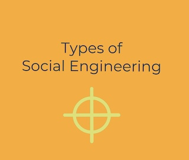

SCE Internship Week 3: June 28 - July 2, 2021
Have you heard of the term ransomware? I’m sure you have, even if you’re not too familiar with cybersecurity. This term is becoming more and more frequently seen on news headlines, with adversaries focusing their threats on businesses with everyday importance and function like supply chain and critical infrastructure. Ransomware attacks are becoming more common, and it doesn’t take a genius cyber hacker to create such payloads to cause business interruptions and demand for monetary payments. Not only is ransomware becoming more common, but they are becoming more sophisticated each day.
SCE Internship Week 2: June 21-25, 2021
In information security, the Lockheed Martin Cyber Kill Chain, released in 2011, is commonly used to illustrate and define the steps used by adversaries during a cyber-attack from beginning to end, in order. Why use a this kill chain model?
SCE Internship Week 1: June 14-18, 2021
IT vs. OT? What’s the difference? I’m sure you have heard about Information Technology (IT). But what about Operational Technology (OT)? I had not heard of this term until last week while being introduced to OT security. What’s the main difference between IT and OT within the scope of power and utilizes? OT devices/systems are responsible for the physical process (grid-based), whereas IT systems control the data and flow of information within an organization (admin-based).
One of the largest concerns with telecommunications over the public network is the risk of the man-in-the-middle, spoofing, or eavesdropping attacks. Attackers can easily spoof their MAC or IP address and insert themselves in between network traffic between the client’s system and the server.

Frequently, social engineers impersonate a legitimate person or entity when carrying out their attacks. By doing so, they disguise and equip themselves with credibility when interacting with others to heighten their chances of manipulating people of their information. For example, suppose a social engineer was to undertake an attack in a residential neighborhood. In that case, they may disguise themselves as water and power technicians to gain entry into houses, opening up many opportunities for an attack.
Do you recall a movie where a con artist successfully manipulates his/her victim into performing something the victim would not normally do? Do you remember a moment in your own life where you received a scam call or email? Perhaps it was a credit card scam, lottery scams, or a phone call from someone claiming to be the IRS demanding a large sum of money. Why are these fraudulent schemes so successful? Why do cybercriminals thrive in this environment, or why do victims fall into the trap of these scams?

Viruses are among the most commonly known types of malware. This type of malicious software replicates itself by altering different computer programs after executing a specific program. Once the host application runs, the virus activates and performs its task. Mostly, the task of a virus is detrimental to a system. Worst case scenario, viruses can delete files, enable backdoors for future attacks, or completely take over the system commands.

Frequently when we think about threats to our devices like phones or laptops that have the capability of corrupting the system or destroying data, we immediately refer to it as a computer virus. You are not wrong, but it is not entirely accurate to state that. Viruses are not the only threatening, malicious software that cyber attackers utilize to compromise your device for malicious intent.

Managing risk within an organization is one of the key responsibilities in ensuring the protection of assets and valuable business information. Risk management is done by identifying, assessing, and treating existing risks to enable greater confidentiality, integrity, and availability of its tangible and intangible assets.
Keeping private information and data secure nowadays in this digital world is a real challenge with everyone, including businesses, social media platforms, and hospitals collecting, storing, and sharing information. Sensitive information like Social Security, credit card or bank account information, employee records, or trade secrets is personal or private business information that is all susceptible to risks if data is not securely protected.